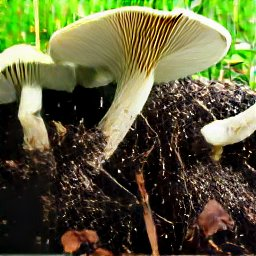

Growing a Mushroom Bed Outdoors
by mushroomhub
Posted on 26-10-2022 10:22 PM

There is something inherently satisfying about walking into your garden and harvesting fresh gourmet mushrooms for your next meal. Growing mushrooms outdoors in garden beds is low maintenance, produces quality food and provides a unique and beautiful addition to your yard. Many different species can be grown outdoors, but i am going to highlight one of our favorites: the king oyster. 
The morel habitat kit is meant for outdoor use. It’s designed to be grown directly in soil, and you need about four to five square feet of ground (like a small raised bed ). Morels are a perennial crop and will continue to produce fungi year after year if the appropriate conditions are provided. You can get started anytime the soil is workable, which depends on your climate. The kit includes a bag of inoculated california mushroom spawn and a set of growing instructions.
The blue oyster mushroom usually colonizes its growing media quickly. They are a cold-weather variant of the pearl oyster mushroom, pleurotus ostreatus, and grow in temperatures from 45-65 degrees fahrenheit, although they do not fruit heavily unless it’s around 60 degrees. They like lots of fresh air to develop their large caps, which means that they can perform well outdoors. The non-blue variation of this species is widely grown throughout asia and is used heavily in chinese, japanese, and korean cooking, but the columbinus variety is very similar in flavor and texture to its whitish namesake.
In the mushroom growing process, agaricus starter culture (spawn) is worked into the mushroom substrate (compost following pasteurization) and allowed to grow throughout the substrate for 14 days. After colonization of agaricus mycelia in the substrate is complete, a 1. 5-inch layer called casing, consisting of peat soil amended with calcium carbonate (to neutralize ph) and water (about 80 percent moisture), is applied on top of the compost bed. This layer is called.
Growing Oyster Mushrooms Outside
Mushroom growing kits - grow gourmet mushrooms grow: shiitake mushrooms, oyster mushrooms (pleurotus), pom pom blanc (hericium) mushrooms, morel mushrooms organic mushroom spawn used to seed these logs is certified organic by quality assurance international (qai). 
Growing oyster mushrooms doesn’t have to be complicated. Sure it’s fun to have a highly controlled grow room, to monitor the environment and to try and optimize to perfection things like humidity, temperature and fresh air. But sometimes, we just want to grow some mushrooms. And i can’t think of a better way to do that than to grow oyster mushrooms outside using the straw log method.
Another good method for big-time mushroom production is creating mulch mushroom beds. These can be done as garden paths or actual garden beds, with the mushrooms popping up under the kale and chard. Oyster mushrooms are especially good for this approach. Sourcing materials: growing your own mushrooms in mulch is possibly the easiest way to do it. You’ll need cardboard boxes, hardwood mulch, oyster mushroom grain spawn, and water. The cardboard boxes should not have shiny surfaces, the hardwood mulch/chips should be fresh, and the water is better if hasn’t been treated (rain, stream, pond, or lake rather than municipal).
First of all, pick a mushroom variety. Mushroom growing beginners are advised to choose button and oyster mushrooms. But if you want, and prefer, morrel and shiitake mushrooms, then you’d better be up for the challenge.
How to Grow Delicious Mushrooms at Home to Use in All Your Favorite Recipes
The variety of mushrooms you can grow at home is surprising, and you can grow a plethora of them, so you might actually have to figure out how to use them all up. Portabella mushrooms are the delicious, meaty mushrooms you can order at restaurants – when you sink your teeth into them, they almost taste like steak. Growing your own portabellas is easy! blue oyster mushrooms, which many say taste like chicken, are a favorite, as are lion’s mane mushrooms, which have a light, delicate, seafood-like taste similar to scallops. Some consider lion’s mane mushrooms to be a “foolproof fungus”.
Back to top wild morel mushrooms (morchella spp. ) are a favorite among chefs and dining connoisseurs who crave the delicious meaty flavor. There are as many as 70 species in the genus, but the ones more commonly gathered in the wild are the black morel (morchella elata), the common morel (morchella esculenta), and the late morel (morchella deliciosa). Hunting for morel mushrooms in the spring becomes a sort of mythical quest for those who crave these forest dwellers. The netted brown caps of the low-growing fungi are perfectly camouflaged in their woodland habitat, blending in with the leaf litter and decaying wood that nourishes morels from one season to the next.
It might surprise you to learn that there at over 14,000 different varieties of mushrooms. Many of them are deadly to eat, but there are plenty that makes a delicious addition to a meal. A mushroom kit can help you grow your favorite varieties at home. Find kits for growing shiitake, oyster, lion’s mane, button, and portobello. Here are a few tips for growing the most popular types of mushrooms for use in the kitchen.
Fresh, homegrown oyster mushrooms are delicious and better than anything you can get at the grocery store. There are a million ways that you can enjoy them. My favorite way is to simply fry them in a pan with butter, garlic, and a bit of pepper. They fry up pretty quick, and loose a lot of size when cooking. As mentioned above, the cap is the best part of the oyster mushroom, as the thick stems can be chewy and not all that tasty. Your experience may be different though, so it may be worth giving the stem a try if you have never eaten it before.
How Do Mushrooms Grow?
The opposite problem of mold – growing lion’s mane mushrooms on logs and blocks can dry out. Try moving logs to a better location or give them a good soak. If you find that your blocks are drying out too quickly, you can put them in a bucket or empty aquarium to help retain water. You can also mist them with water from a spray bottle.
Any good grower will tell you that an important aspect of growing mushrooms is making careful crop observations during the daily walk-through of the houses. Observing spawn growth, pin set and mushroom quality are very important, but it's also important to monitor your houses for pests and disease from the onset of spawn run. Chemicals are available to reduce the numbers of many pathogens and pests once they.
First of all, mushroom growing kit helps you to grow around 500-800 grams of fresh mushrooms, right at your home. Within few weeks, you will see a flourishing mushroom growth in the comforts of your home. To grow mushrooms, you don’t need big space or some special equipments but all you need is patience. Mushroom growing kit helps you to grow around 500-800 grams of fresh mushrooms, right at your home. Within few weeks, you will see a flourishing mushroom growth in the comforts of your home. To grow mushrooms, you don’t need big space or some special equipments but all you need is patience.
The gamboa brothers of chester county, pa are the new owners of quincy farms in quincy, florida. Growing mushrooms in pennsylvania for 20 years, alvaro and abel gamboa reopened the quincy farm last november and expect to pick their first crop at quincy this month. The brothers also own the west grove, pa-based g&g mushrooms, northwest farms and the oxford, pa farm, gamboa mushrooms, inc. They plan to have west coast.
Other Outdoor Growing Methods
Growing mushrooms on logs for centuries, mushrooms have been grown and picked in the wild, a practice that is still a favorite for many serious cultivators. Some of these traditional methods include growing mushrooms on logs. When planting outdoors on logs, it’s recommended to purchase dowels that have been impregnated with mushroom spawn, also known as mycelium. When choosing a log or preparing one, look for a log that has fallen in the dormant season or if cutting your own log, be sure to cut during the dormant season (dormant season is between when the leaves fall off and regrow in the spring).
Dried psilocybe cubensis shrooms if you want to be independent from the trove of fungi out in nature and the offerings from some smart shops in specific countries, it is recommended to create your own fungi culture at home. For each species there are specific methods of cultivating. The psychedelic mushrooms which are cultivated the most are psilocybe cubensis, also called the “mexican”. The reason why they are that known is that they’re quite easy to grow under controlled circumstances. In europe they can only be cultivated indoors. On the other hand, there are other species which can grow easily outdoors.
Harvest, and Mushrooms’ Nutritional Value
Of course, oyster mushrooms, like all mushrooms, should be cooked before eating them. In cooking they function the same way as more familiar white button mushrooms, crimini, or portobellos, so you don’t need any specialized cooking skills to utilize your harvest. Fry them in a little butter and add them to pasta, meat dishes, or top a pizza with them, and you’ll be on your way to enjoying their health and nutritional benefits.
Food lovers regard oyster mushrooms for their meaty texture and unique flavor. Many chefs use them to color their dishes, and they are a staple of asian cuisine. However, they must be used immediately after harvest unless dried. With fiber, protein, b vitamins, choline, vitamin d, copper, iron, magnesium, manganese, phosphorus, potassium, selenium, and zinc, oyster mushrooms are a nutritional powerhouse.
Mushrooms are delicious, delectable, and exquisite to eat. But, the gourmet varieties, like the chanterelle s, can be quite expensive and difficult to find fresh, when not in season. So, what should you do as a beginner home gardener? if you’re fond of using mushrooms in your dishes or you’re just a big fan of mushroom soup, you need to have a garden for growing this appetizing fungus. When you have a source for this gourmet ingredient, you don’t need to forage in the wild, and you stock up your kitchen with dozens of chanterelle mushrooms.
Introduction shiitake is among the "big six" mushrooms in the world accounting for 17% of world production in terms of tonnage [8,18]. It can grow in winter season and also it can grow all the year in controlled condition. Shiitake has 2nd position (25. 4%) on production. After the well-known button mushroom (agaricus bisporus), shiitake is the most cultivated of exotic mushroom in the world. Various species.
If you're making vegetarian options a part of your healthy eating plan, be sure to include some mushrooms. They're high in antioxidants and minerals, and super-low in fat and calories. If you're trying to eat more healthily, consider adding mushrooms to your diet. They're high in nutrients, low in calories, and one of the most versatile veggies around. Actually, mushrooms are not a vegetable. They're a fungus, which means they have no roots or seeds and don't require light to grow. They prefer to grow in dark places (caves are a favorite) and reproduce by releasing spores. To date, over 35,000 varieties of mushrooms have been found to exist in nature, but only a small portion of those are edible.
Crumble and stomp pick up a convenient amount of spent substrate at the helsieni farm in kera. If you have a growkit you can add its contents as well (after harvesting your mushrooms). Remove any green mould if you see some and put it in the compost or biowaste. Crumble the spent substrate into pieces – the smaller the better. Put it all in the chosen place and compress well so that the mycelium grows fast together again. You can effectively compress the mushroom bed by stomping and walking on it. The substrate should be at least 10 cm thick after compressing.
Also, SydneyCaveClan can offer more insight.